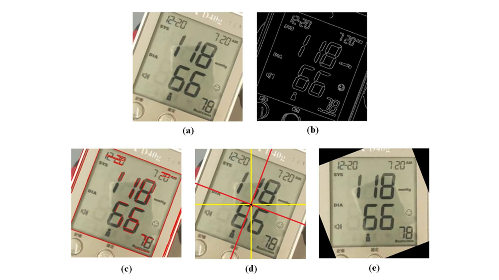
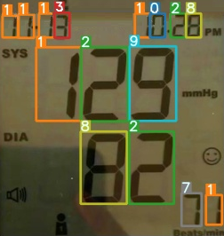

Overview
This project integrates a mobile application with a cloud computing server to automatically read blood pressure monitors. By simply taking a photo, users can digitize their readings without manual entry.
Key Features
- Mobile App: Real-time image quality assessment and model identification.
- Server-Side Processing: GPU-accelerated YOLOv5 detection and OCR.
- Robustness: Handles glare, rotation, and different monitor models.
System Architecture
The following diagram illustrates the data flow from the user's device to the backend server and back.
Detection Demo
The interactive demo below simulates the real-time user experience:
- Glare Detection (Red Box): The app identifies reflections on the screen.
- Camera Adjustment: The user moves the camera to remove glare.
- Clear View (Green Box): Once clear, the image is automatically uploaded.
- Server Result: The recognized digits are returned and displayed.
Figure 2: Animated simulation of the glare removal and detection process.
Technical Details
Mobile Side
We use a lightweight neural network on the phone to verify image clarity and ensure the screen is centered before upload.
Server Side
1. Panel Detection: YOLOv5 locates the screen area.
2. Correction: Hough Transform aligns the screen rotation.
3. Digit Recognition: A specialized YOLO model identifies each digit's value and position.

